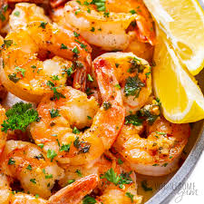

Spicy Garlic Shrimp

Description
This Spicy Garlic Shrimp recipe is a quick and flavorful delight, perfect for a busy weeknight dinner or a vibrant addition to any appetizer spread.
Juicy shrimp are sautéed with a generous amount of garlic and a hint of chili flakes, creating a dish that's bursting with flavor.
The heat from the chili flakes is perfectly balanced with the richness of the garlic, offering a tantalizing experience with every bite.
Ready in just a few minutes, this dish is simple yet impressive, making it a favorite for both novice cooks and seasoned chefs alike.
Ingredients:
- 1 lb (450g) shrimp, peeled and deveined
- 4 cloves garlic, minced
- 1 teaspoon red chili flakes
- 2 tablespoons olive oil
- Salt to taste
- Fresh parsley, chopped (for garnish)
- Lemon wedges (for serving)
Steps:
- Heat the Oil: In a large skillet, heat the olive oil over medium-high heat.
- Sauté Garlic: Add the minced garlic and chili flakes to the skillet. Sauté for about 1 minute, or until the garlic is fragrant but not browned.
- Cook the Shrimp: Add the shrimp to the skillet in a single layer. Season with salt. Cook for about 2 minutes per side or until the shrimp are pink and opaque.
- Garnish and Serve: Remove from heat, garnish with chopped parsley, and serve immediately with lemon wedges on the side.